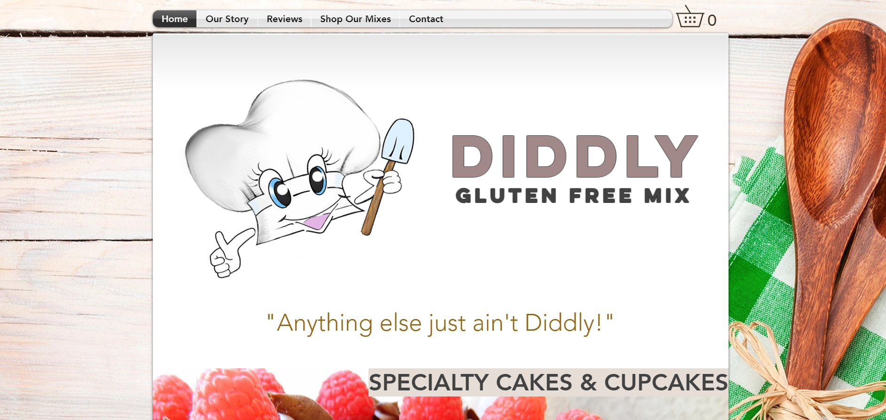

<!--<!DOCTYPE html>
<html lang="en">
<head>
    <meta charset="UTF-8">
    <meta name="viewport" content="width=device-width, initial-scale=1.0">
    <meta name="description" content="The graphic design portfolio of Taylor Kyle, professional website designer and developer.">
    <link rel="stylesheet" href="style.css">
    <title>Graphic Design - Taylor Kyle</title>
</head>
<body>

   
    <header>

        <nav class="top-navbar">
            <div class="nav-wrapper">
                <div class="home"><a href="index.html">Home</a></div>
                <div class="dropdown nav-projects">
                    <button class="dropbtn"><b>Projects</b><span class="caret-down">&#9660;</span>
                    </button>
                    <div class="dropdown-content">
                        <a href="developer.html">Web Development</a>
                        <a href="graphicdesign.html">Graphic Design</a>
                        <a href="https://github.com/taykcreative" rel="noopener">GitHub</a>
                        <a href="https://codepen.io/tayk" rel="noopener">CodePen</a>
                    </div>
                </div>
                <div class="dropdown nav-contact">
                    <button class="dropbtn">Contact<span class="caret-down">&#9660;</span>
                    </button>
                    <div class="dropdown-content">
                        <a href="contact.html">Message</a>
                        <a href="https://www.linkedin.com/in/taykcreative/" rel="noopener">LinkedIn</a>
                    </div>
                </div>
            </div>
        </nav>


        <div class="header-div">
            <div class="h1-container head-container">
                <h1>Graphic Design</h1>
            </div>
            <div class="h2-container head-container">
                <h2>by Taylor Kyle</h2>
            </div>
        </div>

    </header>

    <main>
        <section>
            <h3>Designs:</h3>
             <div class="design-container">
                <div class="introduction">
                    <p>If you click on the images, they will take you to their project posts on my <a href="https://www.behance.net/taykcreative">Behance Profile</a>.</p>
                </div>

                <div class="design-1 design">
                    <div class="design-1-image design-image">
                        <a href="https://www.behance.net/gallery/109056129/APs-Fresca-Marketing-Poster" rel="noopener">
                            
                        </a>
                    </div>
                    <div class="design-1-description design-description">
                        <div class="text-wrapper">
                            <h4>Fresca Advertising Poster</h4>
                    
                            <p>I created this Fresca advertisement poster only using <span class="emphasis">Adobe PhotoShop</span>. My intended audience is all genders ages fourteen and up as they can most likely purchase their own beverages. I wanted to show what the drink tastes like since the can only states: “Original Citrus” which isn’t too clear. There are multiple citrus fruits all with different taste. Fresca Original Citrus happens to be grapefruit flavored.</p>

                            <p>I chose a very simple design. When a person thinks of the word “refreshing”, what do they think of first? Water! So I chose to place the Fresca can above a body of water with ripples. I wanted the Fresca to look like it came out of the water. The grapefruits were added to show the flavor of “Original Citrus”. It was difficult for me to find a coordinating color for the text, so I actually took the yellow banner from the Fresca can, removed the words, flipped the can upside down, and then created a clipping mask over the text.</p>
                        </div>
                    </div>
                </div>
 
                <div class="design-2 design">
                    <div class="design-2-image design-image">
                        <a href="https://diddlyglutenfreemix.com/" rel="noopener">
                            
                        </a>
                    </div>
                    <div class="design-2-description design-description">
                        <div class="text-wrapper">
                            <h4>Diddly Gluten Free Mix Website</h4>
                    
                            <p>I like to code web-pages myself, but <a href="https://diddlyglutenfreemix.com/">this client's website</a> was made with Wix &#40;hence why it's not in the Web Development section of my portfolio&#41;. This particular client has a fully functional Wix site that hasn't expired yet so to save them money, I decided to stick with Wix until their renewal.</p>
                                
                            <p>When the client is due to renew, I plan to switch them to <span class="emphasis">Shopify</span>.</p>
                        </div>
                    </div>
                </div>

                <div class="design-3 design">
                    <div class="design-3-image design-image">
                        <a href="https://www.behance.net/gallery/109055989/AI-Florist-Poster" rel="noopener">
                            
                        </a>
                    </div>
                    <div class="design-3-description design-description">
                        <div class="text-wrapper">
                            <h4>Pierson's Florist Marketing Tabloid</h4>

                            <p>I created an event poster advertising a Floral Arrangement class for Pierson’s Florist. This poster was created with <span class="emphasis">Adobe Illustrator</span>. My intended audience is anybody that is interested in flowers or gardening. This tabloid is designed to appeal to a more feminine audience.</p>
                                
                            <p>My goal was to advertise an event, but also show what the event is about at a distance. I think I achieved my goal with the use of flowers as the main image. I used a radial gradient and a drop shadow to add some depth to the flowers to make them really stand out.</p>
                        </div>
                    </div>
                </div>
             </div>
        </section>
    </main>

    <footer>-->
        <!--<div class="download-cv">
            <span class="resume"><a href="#" download>Download Resume</a></span>
        </div>-->
        <!--<div class="footer-text">This website was designed &amp; developed by Taylor Kyle</div>
    </footer>

</body>
</html>-->